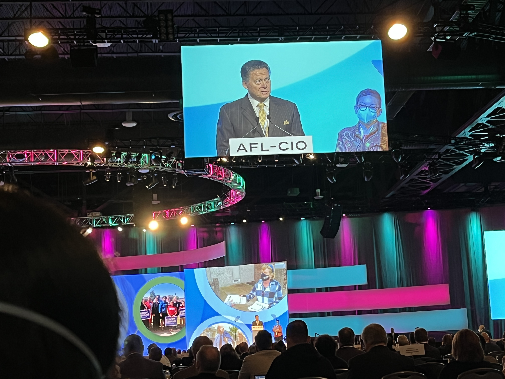

Executive Summary
성인 약 75%가 AI 때문에 일자리를 잃을까 두려워하지만, 현장은 이상하리만치 조용하다. 미국·영국·독일·호주 경영진 6,000명을 조사한 NBER 연구에서 기업의 80% 이상이 "지난 3년간 고용에 측정 가능한 AI 영향은 없었다"고 답했다. 예측이 틀린 게 아니라, 아직 오지 않았을 뿐이다.
브루킹스는 그 지연의 원인을 한 문장으로 못박는다. 지금 노동자를 지켜 온 것은 친노동 설계도, 기술 비용도, 노동 규제도, 협상력도 아니라 그저 조직이 새 기술을 굴리지 못하는 "마찰(friction)" 하나였다는 것이다. 그런데 AI가 하는 일이 정확히 그 마찰을 없앤다. 지금의 방패가 곧 표적이다.
이 글은 마찰이 벌어 준 시간을 어떻게 써야 하는지를 묻는다. 마찰이 얇았던 신입 채용은 이미 뚫렸고(AI 노출 직무 초기경력 고용 최대 16% 감소), 완충장치를 설계할 창은 생각보다 좁다.
80%+
"AI 고용 영향 0" 응답 기업
NBER 경영진 6,000명 — 대량 실직 아직 미도래
1%
감원 중 AI 직접 기인
Gartner — 나머지는 다른 이유
79%
AI 도입 난항 조직
지금 노동자를 지키는 '마찰'의 실체
−16%
AI 노출 신입 고용
얇았던 곳부터 조용히 무너짐
대량 실직은 왜 아직 안 왔나
공포와 현실 사이의 간극이 크다. 여러 여론조사에서 성인 약 75%가 AI로 인한 실직을 걱정하고, 이 우려는 안전이나 국가안보 걱정보다 순위가 높다. 그런데 노동시장 지표는 조용하다. NBER가 미국·영국·독일·호주 경영진 6,000명을 조사했더니, 기업의 70%가 AI를 쓰지만 80% 이상은 지난 3년간 고용과 생산성에 측정 가능한 영향이 없었다고 답했다. 임원들이 AI에 쓰는 시간은 주당 약 1.5시간에 그쳤다. 같은 연구가 내다본 향후 3년 고용 전망조차 온건하다. 예상 감소폭은 0.7%에 그치고, 그 감소분의 약 3분의 2마저 해고가 아니라 퇴직자를 다시 채우지 않는 자연감소(attrition)에서 나올 것으로 봤다. 대량 해고 시나리오는 예측 그래프 안에도 아직 들어와 있지 않다.
감원의 원인을 뜯어봐도 마찬가지다. Gartner는 지금까지 발생한 감원 가운데 AI 생산성 향상에 직접 기인한 것은 약 1%뿐이라고 본다. 나머지는 과잉채용 교정, 고금리, 경기 둔화 같은 익숙한 이유다. 옥스퍼드 이코노믹스는 "기업이 유의미한 규모로 노동자를 AI로 대체하는 것으로 보이지 않는다"고 정리한다.

그래서 첫 구분이 중요하다. "예측이 틀렸다"와 "아직 오지 않았다"는 전혀 다른 이야기다. 대부분의 신뢰할 만한 진단은 후자를 가리킨다. AI의 능력이 부족해서 실직이 없는 게 아니라, 그 능력이 아직 조직 안으로 흘러들지 못하고 있어서다. 그 병목이 무엇인지가 이 글의 출발점이다.
지금 조용한 것은 위험이 없어서가 아니라, 위험과 현실 사이에 무언가가 끼어 있어서다. 그 "무언가"의 정체를 밝히면, 이 유예가 얼마나 갈지도 가늠할 수 있다.
노동자를 지킨 건 정책도 협상력도 아니었다
브루킹스의 노동 정책 보고서에 이 글의 뼈대가 되는 문장이 있다. 지금까지 노동시장의 붕괴가 억제된 것은 "이전 기술 도입 물결에서 보였던 조직적 마찰에 의해 대부분 억제된 것이지, AI 도구의 친노동자 설계나, 기술 도입 비용이나, 공식적 노동 규제나, 노동자의 협상력 때문이 아니다."
저자는 노동자를 지켰다고 흔히 거론되는 후보 넷을 하나씩 부정한다. 그 소거법은 이렇다.
| 지켜 줬다고 여겨진 후보 | 왜 방패가 아니었나 |
|---|---|
| 친노동 AI 설계 | 도구는 노동자 보호를 목표로 설계되지 않는다. 생산성·비용 절감이 우선이다. |
| 기술 도입 비용 | API·구독 비용은 이미 낮고 계속 떨어진다. 진입 장벽이 되지 못한다. |
| 노동 규제 | 어떤 연방법도 대량 해고에 AI가 관여했는지 공개를 의무화하지 않는다. |
| 노동자 협상력 | 민간 노조 가입률은 6% 미만. 노출이 큰 직무일수록 조직화는 더 약하다. |
| 남는 것: 조직 마찰 | 도입 지연·실행 난관·현장 배치까지의 시간 지연. 유일하게 실효적인 방패. |

마지막 줄이 핵심이다. 넷을 지우고 나면 남는 이유는 하나, 조직이 새 기술을 실제로 굴리기까지 걸리는 굼뜸이다. 브루킹스는 이를 도입 지연, 내부 실행 난관, 기술이 쓸 수 있게 된 시점과 현장 배치 사이의 시간 지연으로 정의하고, 이것이 "일시적 유예"에 불과하다고 강조한다.
방패가 얼마나 얇은지는 협상력 쪽을 보면 분명하다. 브루킹스가 "거대한 미스매치"라 부른 현상, 즉 AI 노출도가 높은 일자리일수록 노조 가입 확률은 오히려 낮다는 사실은 가장 위험에 노출된 사람이 가장 조직화되지 않았음을 뜻한다. 제도가 아니라 관성이 지켜 온 방패라면, 관성이 풀리는 순간 지킬 것이 사라진다.
지금 노동자를 지키는 것이 제도가 아니라 조직의 굼뜸이라는 사실은 두 가지를 함의한다. 첫째, 이 보호는 아무도 설계하지 않았고 아무도 지킬 의무가 없다. 둘째, 그것이 사라질 때 자동으로 대신할 것이 없다.
방패가 곧 표적이다
여기서 앵글의 심장에 닿는다. 지금 노동자를 지키는 마찰은 곧 AI가 없애기로 작정한 바로 그것이다. 조율, 문서화, 승인 절차, 중간관리, 부서 간 조정 — 조직을 굼뜨게 만드는 이 모든 것이 지금은 방패지만, 생성형 AI의 핵심 용도가 정확히 그 마찰의 제거다. 방패와 표적이 같은 대상이라는 뜻이다.
마찰이 실재한다는 증거는 도입 현장에 널려 있다. WRITER의 2026 엔터프라이즈 조사에서 조직의 79%가 AI 도입에 어려움을 겪는다고 답했고(전년 대비 두 자릿수 증가), C-suite의 54%는 "AI 도입이 회사를 찢어놓고 있다"고 인정했다. 56%는 권력 다툼과 혼란을, 78%는 IT와 타 부서 간 긴장을 겪었다고 했다.
더 미묘한 사실도 있다. 마찰의 일부는 자기보호적 저항이다. 같은 조사에서 직원의 29%(Gen Z는 44%)가 회사의 AI 전략을 사보타주한다고 인정했다. 일자리를 지키려는 조용한 정치가 도입 속도를 늦추고 있는 것이다. 그러나 기업의 60%는 AI를 쓰지 않는 직원을 해고할 계획이라고 답했다. 저항이 방패가 되는 시간은 길지 않다.
방패가 표적과 같은 대상일 때, 방어는 시간문제일 뿐 방향의 문제가 아니다. 조직이 AI를 제대로 굴리게 되는 날이 곧 방패가 사라지는 날이다. 그러니 질문은 "AI가 얼마나 강한가"가 아니라 "우리에게 남은 시간에 무엇을 지을 것인가"가 된다.
얇은 곳부터 뚫렸다
마찰이 균일하게 두껍지는 않다. 원래 얇았던 지점부터 먼저 뚫린다. 가장 얇은 곳은 신규 채용이다. 기존 직원을 내보내는 데는 조율·비용·평판이라는 두꺼운 마찰이 붙지만, 애초에 뽑지 않는 데는 그런 마찰이 거의 없다. 그래서 충격은 해고가 아니라 채용 동결의 형태로 먼저 온다.
예일 인사이트의 분석에 따르면 AI 노출 직무의 초기경력 고용은 생성형 AI 확산 이후 최대 16% 감소했고, 22~25세의 구직 성공률도 14% 하락했다. "보이는 해고"가 아니라 "애초에 생기지 않는 기회"가 핵심이다. 방패가 얇았던 곳에서 조용히, 통계에 잘 잡히지도 않는 방식으로 먼저 무너지고 있는 것이다.

또 하나의 신호는 "AI 워싱"이다. 재정적 이유의 감원을 AI 탓으로 프레이밍하는 기업이 약 10곳 중 6곳에 이른다(17%는 명시적, 42%는 다소). OpenAI의 샘 올트먼조차 이런 워싱의 존재를 인정했다. 방향은 정반대지만 함의는 같다. 한쪽에서는 AI가 하지 않은 일을 AI 탓으로 돌리고, 다른 쪽에서는 AI가 이미 하고 있는 일(신입 채용 잠식)이 통계에 잡히지 않는다. 어느 쪽이든 우리는 충격의 실제 크기를 지금 정직하게 재지 못한다.
신입 채용 동결은 예고편이다. 마찰이 얇았던 지점이 먼저 뚫렸다면, 마찰이 두꺼운 지점도 결국 같은 방향으로 간다. 지연과 위장 뒤에서 변화는 이미 진행 중이고, 우리가 그것을 다 보지 못할 뿐이다.
완충장치는 지금 설계해야 한다
마찰이 벌어 준 시간은 유일한 자산이다. 문제는 그 시간을 제도 설계에 쓰지 않으면, 방패도 완충장치도 없는 공백이 온다는 것이다. 브루킹스는 이 공백을 메울 정책을 제동·유도·완충·전환 네 갈래로 정리한다.
| 갈래 | 목적 | 예시 |
|---|---|---|
| Brakes 제동 | 자동화에 가드레일 | 알고리즘 결정에 human-in-the-loop 의무화, 배치 전 영향평가 |
| Steers 유도 | 선택에 영향 | 도제제도 확대, 친노동 조달, 자동화 세제 조정 |
| Buffers 완충 | 피해와 고통 축소 | 현대화된 실업보험, 재훈련 받을 권리, 임금보험, 유연안정성 |
| Shifts 전환 | 구조 변화 | 주 4일제 파일럿, 보편적 자본계좌, 노동 우대 세제 |
독자 질문의 핵심은 세 번째 갈래, 완충장치다. 브루킹스는 20세기 산업경제용으로 설계된 실업보험이 이제 한 노동자의 경력 전체에 걸쳐 여러 번 작동해야 할 수 있다고 본다. 재훈련 받을 권리(뉴저지 모델), 임금보험, 덴마크식 유연안정성이 함께 거론된다. 문제는 이 설계에 시간이 걸린다는 것이고, 마찰이 벌어 준 시간이 그 유일한 예산이라는 것이다.
다행히 몇몇 곳에서는 시계가 이미 움직이기 시작했다. 2026년 들어 실제 착수가 세 곳에서 나왔다.
캘리포니아는 행정명령 N-6-26으로 90일 내 AI 고용영향 대시보드, 180일 내 안전망 검토를 지시했다. RAISE US는 10억 달러 목표 중 5억 달러 이상을 확보했는데, 그 자금이 AI 감원을 낸 바로 그 기업들(아마존·앤트로픽·마이크로소프트·오픈AI)에서 나왔다는 점이 아이러니하다. 브루킹스 진영과 가까운 지니 라이몬도의 말이 시간표의 긴박함을 요약한다. "향후 몇 년간 의회의 과감한 조치를 기대하지 않지만, 몇 년을 기다릴 수도 없다."
Bipartisan Policy Center는 AI 최고노출 직군 3,700만 명 가운데 약 600만 명이 높은 노출과 낮은 적응역량을 동시에 안고 있다고 본다. 사무·행정직에 집중되고, 압도적으로 여성이며, 중소도시에 몰려 있다. 실업보험만으로는 이 깊이의 충격을 감당할 수 없다는 진단이다. 마찰이 사라지기 전에 완충장치를 설계하지 못하면, 가장 얇은 방패 뒤에 서 있던 이들이 가장 먼저, 아무 대비 없이 노출된다.
편집자의 노트. 마찰이 사라진다는 것은 조직이 데이터와 프로세스를 마침내 "AI가 굴릴 수 있는" 상태로 만든다는 뜻이기도 하다. 그 전환의 품질이 노동 충격의 속도를 좌우한다. 데이터를 AI가 신뢰할 수 있는 형태로 다듬는 문제에 관심이 있다면 페블러스가 다뤄 온 AI-Ready Data 관점을 참고하길 권한다. 이 글의 결론은 어디까지나 완충장치 설계의 시간표에 있다.
참고문헌
R.11차 출처·정책
- 1.Brookings Institution. (2026). "Getting to all-of-the-above: A framework of solutions for AI's coming impacts on work and workers."
- 2.Office of Governor of California. (2026-05-21). "Governor Newsom signs first-of-its-kind Executive Order N-6-26 on AI and the workforce."
- 3.Bipartisan Policy Center. (2026). "AI and the Workforce: An Uncertain Future and an Unprepared Present."
R.2학술·연구
- 4.Bloom, N. 외. (2026). "Firm Data on AI." NBER Working Paper No. w34836.
- 5.Yale School of Management Insights. (2026). "The Real Job Destruction From AI Is Hitting Before Careers Can Start."
- 6.SHRM. (2026). "State of AI in HR 2026 — Full Report."
R.3업계·보도
- 7.WRITER. (2026). "Enterprise AI adoption 2026."
- 8.Fortune / Oxford Economics. (2026-01-07). "AI layoffs are a convenient corporate fiction."
- 9.TechTimes. (2026-06-30). "AI Workforce Retraining Fund (RAISE US) Hits $500M."